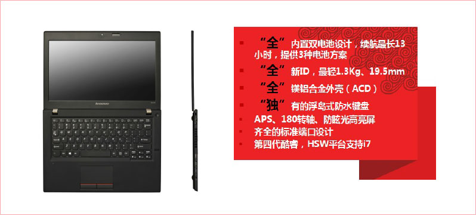
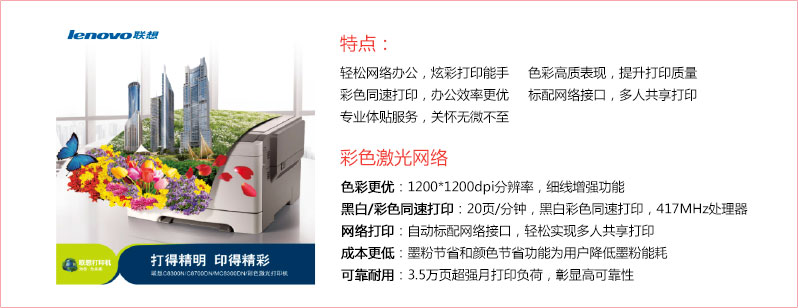

联想极致安全桌面终端助力电力办公自动化
极致安全桌面终端助力电力办公自动化
- 应用场景：办公自动化
- 关键词：高性能、高效率、易管理、高安全以及高可靠性
- 安全、可靠的计算机是电力办公自动化的基础，电网办公自动化系统形成了内外网隔离，内外网双终端的系统
极致安全的联想桌面终端产品
联想ThinkCentre M系列 - 安全稳定
联想ThinkCentre S系列 - 安全小巧
联想ThinkCentre 安全PC - 极致安全
联想ThinkCentre 双网隔离 - 网络安全
联想超轻薄移动终端助力电力办公自动化
超轻薄移动终端助力电力办公自动化
- 应用场景：会议、出差和户外等环境下的移动办公
- 产品关键词：轻薄、轻便、稳定、安全、超强性能、超长待机时间
联想超轻薄移动终端助力电力办公自动化
- Part 1. 电网移动办公超级笔记本
-- XI Carbon、X230S
-- K4450、K2450
- Part 2. 电网移动办公之变形本和平板笔记本
-- X1 Helix 、Tablet2
-- Miix 10
适用于电力行业的联想移动终端
电网移动办公超级本之ThinkPad X1 Carbon
电网移动办公超级本之ThinkPad X230S
电网移动办公超轻薄笔记本之联想昭阳K4450
电网移动办公超轻薄笔记本之联想昭阳K2450

电网移动办公之异形笔记a本联想ThinkPad X1 Helix
电网移动办公之平板笔记本联想ThinkPad Tablet 2

电网移动办公之平板笔记本联想昭阳 Miix 10
联想功能强大打印设备助力电力办公自动化
联想功能强大打印设备助力电力办公自动化
- 应用场景描述：公司内办公场所的文件打印，扫描，传真
- 关键词：安全、功能全、稳定，易操作、高效、节能环保
联想六款打印机入围国网公司办公用品超市采购
国网公司入围产品之联想RJ610N A4光墨打印机
国网公司入围产品之联想M7650DN多功能一体机
国网公司入围产品之联想C8300N激光网络打印机

国网公司为什么选择联想打印机－市场份额国网公司为什么选择联想打印－稳定可靠 安全保密
国网公司为什么选择联想打印－耗材成本低国网公司为什么选择联想打印机－绿色环保 节能低碳
联想易用易管理瘦终端助力电力营销业务系统
易用易管理瘦终端助力电力营销业务系统
- 应用场景描述：营销业务—呼叫中心， 营业厅
- 关键词：易管理，易操作，超小体积，企业形象
商用客户对IT解决方案需求综述
联想智能桌面虚拟化（LIC）
联想客户提供端到端的整体解决方案
联想易用易管理瘦终端之ThinkCentre M4350q
联想易用易管理瘦终端之ThinkCentre 2600c